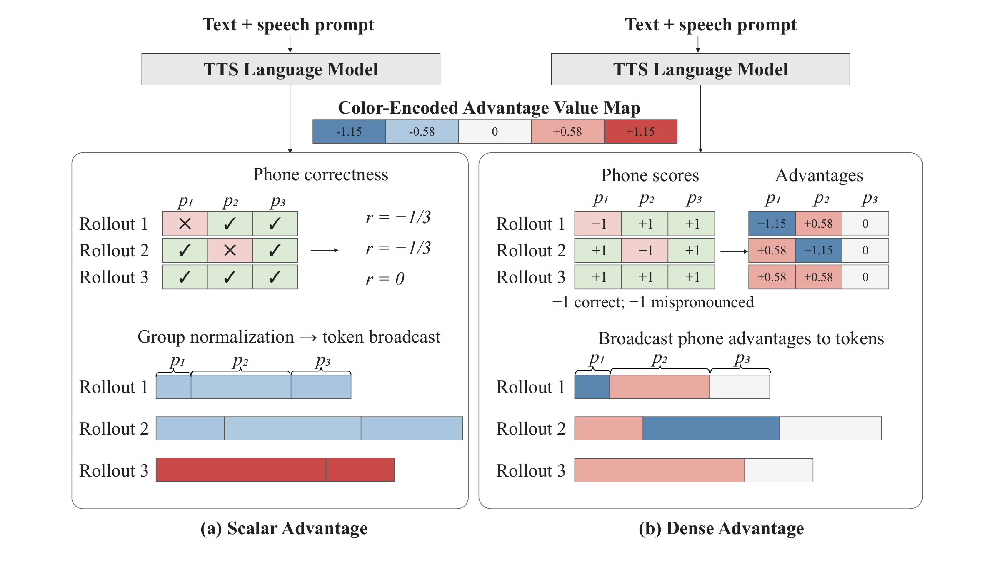

1University of Science and Technology of China 2iFLYTEK Research
Text-to-speech (TTS) reinforcement learning often uses utterance-level rewards from text ASR to improve pronunciation. Yet contextual ASR can mask a pronunciation error by exploiting linguistic context, hiding it from the transcript. In our experiments, contextual ASR detects only 19.6–31.3% of pronunciation errors. Moreover, such a reward cannot identify which acoustic tokens caused the error. This leaves TTS reinforcement learning without feedback that is both sensitive to phone errors and localized in time. We propose LM-Agnostic Recognition Reward (LARR) and a phone-level credit-assignment scheme to address these limitations. LARR uses phone-level recognition to reduce contextual masking of pronunciation errors, while dense LARR assigns credit to individual phones, thereby targeting individual pronunciation errors. We apply GRPO fine-tuning to a pre-trained LLM-based TTS model in both zero-shot and single-speaker SFT-to-RL settings. Experimental results show that the proposed method substantially improves both the intelligibility and naturalness of synthesized speech.

| System | Mean CER/WER ↓ | Mean PER ↓ | Mean SIM ↑ |
|---|---|---|---|
| Original | 4.116% | 3.424% | 76.204% |
| FireRedASR | 3.313% | 2.207% | 76.030% |
| W3AR | 4.046% | 3.119% | 76.389% |
| Scalar LARR | 3.186% | 1.687% | 75.661% |
| Local LARR | 3.430% | 1.753% | 75.860% |
| Dense LARR (ours) | 3.273% | 1.493% | 75.980% |
Each example contains an intentionally mispronounced utterance from the 2,000-utterance paired diagnostic set. The complete outputs are shown below; the injected pronunciation is highlighted in red and bold.
| Type | Sample | Mispronounced audio | Full text ASR output Qwen3-ASR-1.7B | Full phone output ce_asr_beam |
|---|---|---|---|---|
| Polyphone | 500921 行: xing2 → hang2 | 通过创新技术，让未来出行更加安全、高效。 | sil t ong1 g uo4 ch uang4 x in1 j i4 sh u5 r ang4 uei4 l ai2 ch u1 h ang2 g eng4 j ia1 an1 q van2 L3 g ao1 x iao4 sil | |
| Initial | 62250 山: shan1 → san1 | 趁着这个晴朗的周末，天气大好，我们几个朋友相约，一起去爬了郊外那座有着上百年历史的名山。 | sil ch en4 zh e5 zh ei4 g e5 q ing2 l ang3 d e5 zh ou1 m o4 L3 t ian1 q i5 d a4 h ao3 L3 uo3 m en5 j i3 g e4 p eng2 iou5 x iang1 ve1 L3 i4 q i3 q v4 p a2 l e5 j iao1 uai4 n a4 z uo4 iou3 zh e5 sh ang4 b ai3 n ian2 l i4 sh iii3 d e5 m ing2 s an1 sil | |
| Rime | 62020 觉: jiao4 → jia4 | 他每天加班到深夜，回到家洗完澡再吃点东西，常常已经凌晨两三点才能上床睡觉。 | sil t a1 m ei3 t ian1 j ia1 b an1 d ao4 sh en1 ie4 L3 h uei2 d ao4 j ia1 x i3 uan2 z ao3 z ai4 ch iii1 d ian3 d ong1 x i5 L3 ch ang2 ch ang2 i3 j ing1 l ing2 ch en2 l iang3 s an1 d ian3 L3 c ai2 n eng2 sh ang4 ch uang2 sh uei4 j ia4 sil | |
| Tone | 63082 相: xiang1 → xiang4 | 压根想不出有什么东西可与之相比。 | sil ia4 g en1 x iang3 b u4 ch u1 iou3 sh en2 m e5 d ong1 x i5 k e6 v3 zh iii1 x iang4 b i3 sil |
Phone sequences use the recognizer's token notation, including silence (sil) and pause markers (L3).
Each example uses the same prompt and target text across six systems.
Target text: 只有当科技为本地社群创造价值的时候，才真正有意义。
Target text: 因为微整形导致毁容的事件接二连三。
Target text: 指着他挨着右边胸膛的位置的一个疤痕。
Target text: 在珠宝翡翠里，属于奢侈品，还会有价值空间。
Target text: 变捞为养，大海捞鱼向来是海洋渔业传统的作业方式。
Target text: 这有一种欢乐，一种高兴，超过那富有的波尔毕庄子。
All three systems synthesize the same target sentence. Base is direct inference from the SFT model.
Target text: 全球每年有超过一百三十五万人，因交通事故而死亡。
Target text: 拿一只中型平底锅，用中大火融化奶油，加入面粉搅拌至滑顺。
Target text: 全国恶性肿瘤发病，及死亡第一位的是肺癌。
Target text: 女主在等男主回来，事情挺多，不会无聊。
Target text: 他的建议迎合了一些，舍不得抛弃财产撤退的日侨，侥幸偷安的心理。
Target text: 将货物通关时间，从原来的九点二个小时，缩短为九分钟。